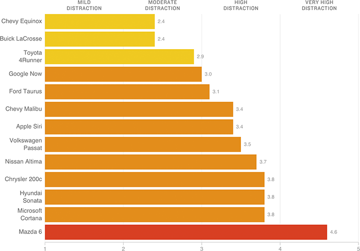

Many Voice-Activated Car Systems Still Cause ‘Potentially Dangerous’ Distraction
Researchers studied users’ mental distraction when using voice commands to make calls or change music while driving. A rating of two or higher is considered potentially dangerous.
